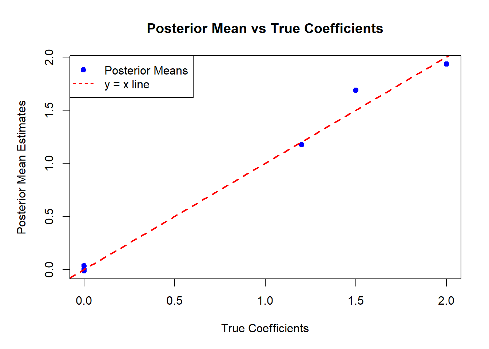

Code
set.seed(123)
# Simulate data
n <- 100
p <- 5
X <- cbind(1, matrix(rnorm(n * p), n, p))
beta_true <- c(2, 1.2, 0, 0, 0, 1.5) # some zeros (spike)
sigma_true <- 1
y <- X %*% beta_true + rnorm(n, 0, sigma_true)Peter Sørensen
Center for Quantitative Genetics and Genomics
Aarhus University
This document demonstrates Bayesian Linear Regression using spike-and-slab priors, as described in the notes. We implement a Gibbs sampler that updates parameters from their full conditionals, computes posterior summaries (including posterior inclusion probabilities), and evaluates convergence using diagnostic statistics.
We use the following priors:
\(\alpha_i \mid \sigma_b^2 \sim \mathcal{N}(0, \sigma_b^2)\)
\(\delta_i \mid \pi \sim \text{Bernoulli}(\pi)\)
\(\pi \sim \text{Beta}(a, b)\)
\(\sigma_b^2 \sim S_b \chi^{-2}(v_b)\)
\(\sigma^2 \sim S \chi^{-2}(v)\)
# Hyperparameters
a_pi <- 1
b_pi <- 1
v_b <- 4
S_b <- 1
v <- 4
S <- 1
# Gibbs sampler setup
n_iter <- 4000
burn_in <- 1000
chains <- 2
# Storage
beta_samples <- vector("list", chains)
delta_samples <- vector("list", chains)
pi_samples <- vector("list", chains)
sigma2_samples <- vector("list", chains)
sigma2b_samples <- vector("list", chains)
for (c in 1:chains) {
# Initial values
alpha <- rnorm(ncol(X), 0, 1)
delta <- rbinom(ncol(X), 1, 0.5)
sigma2 <- 1
sigma2_b <- 1
pi <- 0.5
# Containers
alpha_chain <- matrix(NA, n_iter, ncol(X))
delta_chain <- matrix(NA, n_iter, ncol(X))
sigma2_chain <- numeric(n_iter)
sigma2b_chain <- numeric(n_iter)
pi_chain <- numeric(n_iter)
for (t in 1:n_iter) {
# Sample each alpha_i given delta_i
for (j in 1:ncol(X)) {
X_j <- X[, j]
r_j <- y - X %*% (alpha * delta) + X_j * alpha[j] * delta[j]
if (delta[j] == 1) {
var_j <- sigma2 / (t(X_j) %*% X_j + sigma2 / sigma2_b)
mean_j <- as.numeric(var_j * t(X_j) %*% r_j / sigma2)
alpha[j] <- rnorm(1, mean_j, sqrt(var_j))
} else {
alpha[j] <- rnorm(1, 0, sqrt(sigma2_b)) # prior draw
}
}
# Sample delta_i given alpha_i
for (j in 1:ncol(X)) {
X_j <- X[, j]
r_j <- y - X %*% (alpha * delta) + X_j * alpha[j] * delta[j]
rss0 <- sum((r_j)^2)
rss1 <- sum((r_j - X_j * alpha[j])^2)
logodds <- 0.5 / sigma2 * (rss0 - rss1) + log(pi) - log(1 - pi)
p1 <- 1 / (1 + exp(-logodds))
delta[j] <- rbinom(1, 1, p1)
}
# Update pi
pi <- rbeta(1, a_pi + sum(delta), b_pi + ncol(X) - sum(delta))
# Update sigma_b^2
p_incl <- sum(delta)
v_b_tilde <- v_b + p_incl
S_b_tilde <- (sum((alpha * delta)^2) + v_b * S_b) / v_b_tilde
sigma2_b <- v_b_tilde * S_b_tilde / rchisq(1, df = v_b_tilde)
# Update sigma^2
resid <- y - X %*% (alpha * delta)
v_tilde <- v + n
S_tilde <- (sum(resid^2) + v * S) / v_tilde
sigma2 <- v_tilde * S_tilde / rchisq(1, df = v_tilde)
# Store
alpha_chain[t, ] <- alpha * delta
delta_chain[t, ] <- delta
pi_chain[t] <- pi
sigma2_chain[t] <- sigma2
sigma2b_chain[t] <- sigma2_b
}
beta_samples[[c]] <- alpha_chain
delta_samples[[c]] <- delta_chain
pi_samples[[c]] <- pi_chain
sigma2_samples[[c]] <- sigma2_chain
sigma2b_samples[[c]] <- sigma2b_chain
}posterior_summary <- function(samples, probs = c(0.025, 0.5, 0.975)) {
c(mean = mean(samples), sd = sd(samples), quantile(samples, probs = probs))
}
# Combine chains
beta_all <- do.call(rbind, beta_samples)
pi_all <- unlist(pi_samples)
delta_all <- do.call(rbind, delta_samples)
beta_summary <- t(apply(beta_all[burn_in:nrow(beta_all), ], 2, posterior_summary))
rownames(beta_summary) <- paste0("beta", 0:p)
PIP <- colMeans(delta_all[burn_in:nrow(delta_all), ])
round(beta_summary, 4) mean sd 2.5% 50% 97.5%
beta0 1.9340 0.0975 1.7469 1.9348 2.1217
beta1 1.1750 0.1057 0.9651 1.1759 1.3812
beta2 0.0330 0.0750 0.0000 0.0000 0.2550
beta3 0.0027 0.0352 -0.0568 0.0000 0.1062
beta4 -0.0139 0.0487 -0.1804 0.0000 0.0082
beta5 1.6871 0.0974 1.4967 1.6865 1.8798
Posterior Inclusion Probabilities (PIP):[1] 1.000 1.000 0.250 0.124 0.159 1.000convergence_stats <- function(samples) {
n <- length(samples)
ac1 <- cor(samples[-1], samples[-n])
mcse <- sd(samples) * sqrt((1 + ac1) / n)
a <- floor(0.1 * n); b <- floor(0.5 * n)
z <- (mean(samples[1:a]) - mean(samples[(n - b + 1):n])) /
sqrt(var(samples[1:a]) / a + var(samples[(n - b + 1):n]) / b)
ess <- n / (1 + 2 * sum(acf(samples, plot = FALSE)$acf[-1]))
c(autocorr1 = ac1, mcse = mcse, geweke_z = z, ess = ess)
}
# Apply to chain 1
conv_results <- t(apply(beta_samples[[1]][burn_in:n_iter, ], 2, convergence_stats))
rownames(conv_results) <- paste0("beta", 0:p)
round(conv_results, 4) autocorr1 mcse geweke_z ess
beta0 0.0232 0.0018 -0.9796 2745.9833
beta1 0.0374 0.0020 0.5127 2185.3118
beta2 0.3956 0.0016 0.4830 878.5174
beta3 0.0291 0.0006 0.9637 2597.4558
beta4 0.2506 0.0010 -0.4140 971.6853
beta5 0.0490 0.0018 -2.8212 3758.3315Rhat <- function(ch1, ch2) {
n <- nrow(ch1)
m <- 2
chain_means <- c(colMeans(ch1), colMeans(ch2))
overall_mean <- colMeans(rbind(ch1, ch2))
B <- n * apply(rbind(colMeans(ch1), colMeans(ch2)), 2, var)
W <- (apply(ch1, 2, var) + apply(ch2, 2, var)) / 2
var_hat <- ((n - 1) / n) * W + (1 / n) * B
sqrt(var_hat / W)
}
Rhat_values <- Rhat(beta_samples[[1]][burn_in:n_iter, ], beta_samples[[2]][burn_in:n_iter, ])
round(Rhat_values, 3)[1] 1 1 1 1 1 1par(mar = c(5, 5, 4, 2))
plot(beta_true, beta_summary[, "mean"], pch = 19, col = "blue",
xlab = "True Coefficients", ylab = "Posterior Mean Estimates",
main = "Posterior Mean vs True Coefficients")
abline(0, 1, col = "red", lwd = 2, lty = 2)
legend("topleft", legend = c("Posterior Means", "y = x line"),
col = c("blue", "red"), pch = c(19, NA), lty = c(NA, 2))